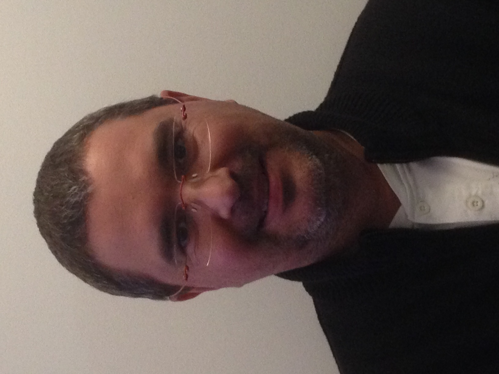
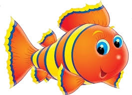
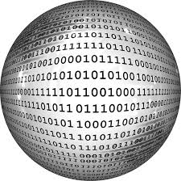
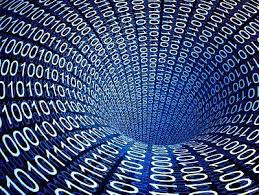
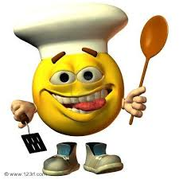
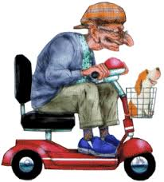

PROGRAMMEUR DEVELOPPEUR
(autodidacte)
Visual basic
C++
Programmation orienté objet
HTML5 et CSS3
PHP et MySQL
JAVASCRIPT
- Mes coordonnées
- Tél. Fixe : 05.57.69.07.32
- Tél. Portable : 06.78.22.96.84
- Adresse Mail : fabrice.dufeutrelle@gmail.com
- Adresse Postal : 15 LIEU-DIT BUISSON
33910 SAINT MARTIN DE LAYE
- Mes langues étrangères
- Le japonnais
- Le chinois
- Le russe
- L'anglais
- Le Javanais
- Le poisson
 - Le bucodonausaurius-cytrus-cumulonymbus
- Mes losirs
- La programmation

- La batterie
- La musique
- La cuisine
 - la moto

- La programmation
Mes expériences professionnelles
Février 2015 à janvier 2017
Autoformation Langage C++ et Programmation orienté objet
Autoformation HTML5 et CSS3
Autoformation PHP MySQL
Octobre 2012 à Février 2015
Programmeur développeur et dessinateur projeteur (société MEISON INNOVATIONS)
Réalisation d’un outil de chiffrage sur Excel en VBA
Novembre 2011 à Septembre 2012
Dessinateur projeteur (société TANAÏS à LIBOURNE)
Mars 2006 à Octobre 2011
Programmeur développeur et dessinateur projeteur (société CONFORT BOIS à JUGAZAN)
Autoformation Langage Visual Basic
Création et modification en Programmation d’objet GDL pour le logiciel ARCHICAD
Réalisation d’un outil de chiffrage sur Excel en VBA
Février 2004 à Février 2006
Maintenance de la sauvegarde des données informatique et dessinateur projeteur
(société SECOTRAP à BORDEAUX)
1992 – 2003
Responsable informatique et dessinateur projeteur (société SEURAT Ingénierie à PARIS)
Maintenance de dix ordinateurs au sein de la société SEURAT Ingénierie :
-Achat des ordinateurs
-Installation des machines et du réseau
-Configuration des logiciels, du réseau et d’Internet
-Dépannage des machines
-Encadrement d’une équipe pour l’apprentissage du matériel et des logiciels
Mes études, formations et connaissances informatique
Mes études
CAP d’électronique
Mes formations
Stage d’informatique (Analyste programmeur), Langage : GAP, COBOL, BASIC
Formation JAVASCRIPT, Méthode agiles et scrum à la WildCodeSchool
mes connaissances informatique
Système informatique : PC et MAC
Système d’exploitation : Microsoft Windows, Mac OS X, GNU/Linux
Programmation sur Microsoft Visual Basic, Microsoft Visual C++, Code::Blocks, QtCreator
Excellente maîtrise des Logiciels de dessin, Autocad, Archicad et d’Artlantis, 3D studio, Sema